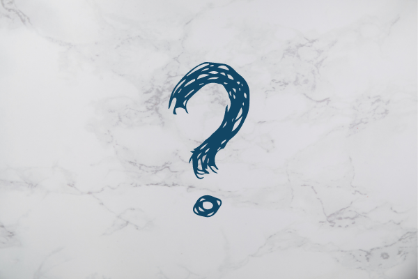

Como a atitude corporal muda a forma como
outros e nós mesmos nos vemos?

A linguagem corporal está diretamente ligada aos nossos pensamentos e sentimentos, dessa maneira, a nossa postura corporal pode passar informações que até nós mesmo não percebemos. Quando estamos com raiva ou chateados o nosso corpo transmite isso através de expressões faciais ou corporais, muitas vezes involuntárias. Logo, se observarmos nossas expressões por um período de tempo, podemos descobrir mais de nós do que já sabíamos e entender o porquê e como as pessoas nos veem de tais maneiras.
Dessa forma, é possível validar mais o que expressamos na linguagem verbal através da linguagem corporal, onde se é visto realmente o que está no nosso subconsciente. Por exemplo, nas entrevistas de emprego e na identificação de líderes, é possível analisar os mecanismos da linguagem corporal para que se tenha informações importantes sobre possíveis posicionamentos e atitudes futuras dos candidatos e líderes.
Assim, através da postura corporal podemos induzir as percepções sobre nós e para nós mesmos. Como quando utilizamos uma postura de poder antes de encarar uma atividade que exige mais coragem, ajudará a nos sentirmos mais preparados para tais ações. Ou quando estamos deprimidos e adotamos uma postura mais positiva, afeta diretamente nossa sensação de bem estar.
Portanto, a atitude corporal muda a forma como nos vemos e somos vistos, pois é de acordo com a análise dessas atitudes que podemos verificar se estamos realmente entregando a informação como desejamos transmitir ou o que desejamos sentir.